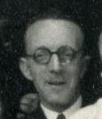
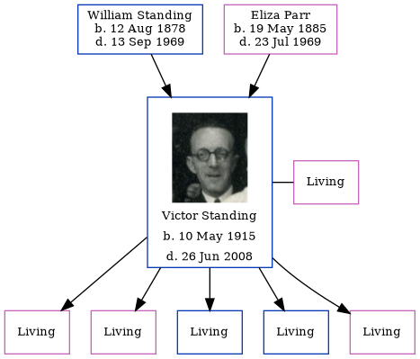

Victor William Standing 1915 - 2008
[ Home ] | [ Calendar ] | [ Surnames Index ] | [ Family History ]A motor driver and the son of William Standing (a laundryman) and Eliza Parr, Victor Standing, the fourth cousin once-removed on the father's side of Nigel Horne, was born in Romford, Essex, England on May 10, 19151,2,3,4,5 and. He married Ellen E M Crothers (with whom he had 5 surviving children Ellen F, Teresa M, David W, Christopher Earling and Ursula E) in Ilford, London, England on Sep 3, 19406.
Throughout his life, Victor lived in several places: at 5 Aurelia Cottages, Ley Street, Ilford, Essex, England on Jun 19, 19217; at 5 Aurelia Cottages, Ley Street in Ilford on Sep 29, 19391; and at 57 Kimberley Avenue in Ilford in 1963.
He died on Jun 26, 2008 in Cowes, Isle of Wight, England4,5.
Parents
- William Ernest was born on Aug 12, 1878
- Eliza Mary was born on May 19, 1885
Citations
- 1939 Register - Findmypast (was the son of the head of the household)
- England & Wales births 1837-2006 - Findmypast
- England & Wales, FreeBMD Birth Index, 1837-1915 Online publication - Provo, UT, USA: The Generations Network, Inc., 2006.Original data - General Register Office. England and Wales Civil Registration Indexes. London, England: General Register Office. © Crown copyright. Published by permission of the Cont
- England and Wales, Death Index, 2007-2013 Ancestry.com Operations, Inc.
- United Kingdom Deaths - Findmypast
- England & Wales, Marriage Index: 1916-2005 Online publication - Provo, UT, USA: The Generations Network, Inc., 2009.Original data - General Register Office. England and Wales Civil Registration Indexes. London, England: General Register Office. © Crown copyright. Published by permission of the Cont
- 1921 Census Of England & Wales - Findmypast (was age 6 and the son of the head of the household)
Media
Victor William Standing

England & Wales marriages 1837-2008 Transcription - BMD-M-1940-3-PZ-000345-075
England & Wales births 1837-2006 Transcription - BMD-B-1915-2-AZ-001419-056
1939 Register Transcription - TNA-R39-1088-1088B-002-28
1939 Register Image - TNA-R39-1088-1088B-002
United Kingdom Deaths 2007-2017 - BMD/D/MILLEN/001906164
Family Tree
Generated by Ged2Site. Last updated on Jul 20, 2025